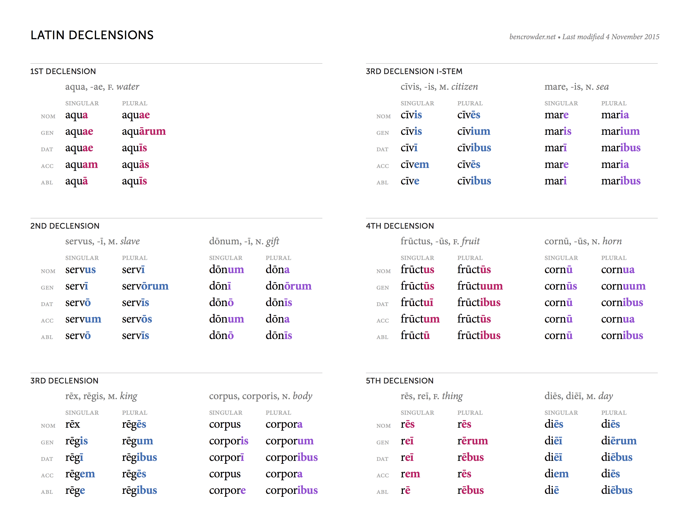

<!DOCTYPE html>
<html>
  <head>
    <meta charset="utf-8">
    <title>Grammatica Latina</title>
    <link href='https://fonts.googleapis.com/css?family=Cinzel' rel='stylesheet' type='text/css'>
    <style>
      * { font-family: "Palatino Linotype", "Book Antiqua", Palatino, serif; }
      th, p, p *, #counter { font-family: 'Cinzel', serif; }
      .demo td, th { padding: .25em; }
      .demo th {
        text-align: left;
        padding-right: 1em;
        padding-left: 0.5em;
        background: #f0f0f0;
      }
      input { border-color: transparent; }
      input[type="text"] {
        width: 14em;
        font-size: 1.1em;
      }
      input[readonly] {
        background: transparent;
      }
      input[type="submit"] { display: none; }

      .reveal-on-hover {
        visibility: hidden;
      }
      .secret-box:hover .reveal-on-hover {
        visibility: visible;
      }
      p.secret-box {
        margin: 0.5em;
      }

      #counter {
        position: fixed;
        top: 0;
        right: 1em;
        font-size: 1.75em;
        font-weight: bold;
        color: #555;
      }

      .help-chart {
        width: 100%;
      }
    </style>

    <script type="text/template" id="noun-form">
      <form id="noun-adj-form" onsubmit="return next();">
        <table class="demo">
          <caption></caption>
          <thead>
            <tr>
              <th>Kasus</th>
              <th>Singular</th>
              <th>Plural</th>
            </tr>
          </thead>
          <tbody>
            <tr>
              <th>nominative</th>
              <td><input type="text" pattern="%nom%"    required autofocus /></td>
              <td><input type="text" pattern="%nom_pl%" required /></td>
            </tr>
            <tr>
              <th>genitiv</th>
              <td><input type="text" pattern="%gen%"    value="%gen%"   readonly disabled /></td>
              <td><input type="text" pattern="%gen_pl%" value="%gen_pl%" readonly disabled /></td>
            </tr>
            <tr>
              <th>dativ</th>
              <td><input type="text" pattern="%dat%"    value="%dat%" readonly disabled /></td>
              <td><input type="text" pattern="%dat_pl%" value="%dat_pl%" readonly disabled /></td>
            </tr>
            <tr>
              <th>ackusativ</th>
              <td><input type="text" pattern="%acc%"    required /></td>
              <td><input type="text" pattern="%acc_pl%" required /></td>
            </tr>
            <tr>
              <th>ablativ</th>
              <td><input type="text" pattern="%abl%"    value="%abl%"  readonly disabled /></td>
              <td><input type="text" pattern="%abl_pl%" value="%abl_pl%" readonly disabled /></td>
            </tr>
          <tbody>
        </table>
          <p class="secret-box">Declension: <strong class="reveal-on-hover">%dec%</strong></p>
          <p class="secret-box">Gender: <strong class="reveal-on-hover">%gender%</strong></p>
        <input type="submit" value="Submit" />
      </form>

      
    </script>

    <script type="text/words" id="noun-adj-1" guess="nom,acc">

      1, 1/2 declension.
      feminine gender
      Case        Singular        Plural
      nominative  puella laeta    puellae laetae
      genitive    puellae laetae  puellārum laetārum
      dative      puellae laetae  puellīs laetīs
      accusative  puellam laetam  puellās laetās
      ablative    puellā laetā    puellīs laetīs
      vocative    puella laeta    puellae laetae

      2, 1/2 declension.
      masculine gender
      Case        Singular        Plural
      nominative  amīcus ānxius   amīcī ānxiī
      genitive    amīcī ānxiī     amīcōrum ānxiōrum
      dative      amīcō ānxiō     amīcīs ānxiīs
      accusative  amīcum ānxium   amīcōs ānxiōs
      ablative    amīcō ānxiō     amīcīs ānxiīs
      vocative    amīce ānxie     amīcī ānxiī

      2, 2 declension.
      neuter gender
      Case        Singular        Plural
      nominative  vīnum bonum     vīna bona
      genitive    vīnī bonī       vīnōrum bonōrum
      dative      vīnō bonō       vīnīs bonī
      accusative  vīnum bonum     vīna bona
      ablative    vīnō bonō       vīnīs bonīs
      vocative    vīnum bonum     vīna bona

      3, 3 declension.
      masculine gender
      Case        Singular        Plural
      nominative  pater fēlīx     patrēs fēlīcēs
      genitive    patris fēlīcis  patrum fēlīcium
      dative      patrī fēlīcī    patribus fēlīcibus
      accusative  patrem fēlīcem  patrēs fēlīcēs
      ablative    patre fēlīcī    patribus fēlīcibus
      vocative    pater fēlīx     patrēs fēlīcēs


      3, 3 declension.
      masculine, feminine gender
      Case        Singular            Plural
      nominative  coniūnx sapiēns     coniugēs sapientēs
      genitive    coniugis sapientis  coniugum sapientium
      dative      coniugī sapientī    coniugibus sapientibus
      accusative  coniugem sapientem  coniugēs sapientēs
      ablative    coniuge sapientī    coniugibus sapientibus
      vocative    coniūnx sapiēns     coniugēs sapientēs

      3, 3 declension neuter.
      neuter gender
      Case        Singular          Plural
      nominative  nūmen ingēns      nūmina ingentia
      genitive    nūminis ingentis  nūminum ingentium
      dative      nūminī ingentī    nūminibus ingentibus
      accusative  nūmen ingēns      nūmina ingentia
      ablative    nūmine ingentī    nūminibus ingentibus
      vocative    nūmen ingēns      nūmina ingentia

      2, 3 declension.
      masculine gender
      Case        Singular        Plural
      nominative  amīcus fēlīx    amīcī fēlīcēs
      genitive    amīcī fēlīcis   amīcōrum fēlīcium
      dative      amīcō fēlīcī    amīcīs fēlīcibus
      accusative  amīcum fēlīcem  amīcōs fēlīcēs
      ablative    amīcō fēlīcī    amīcīs fēlīcibus
      vocative    amīce fēlīx     amīcī fēlīcēs

      3, 1/2 declension.
      masculine, feminine gender
      Case        Singular          Plural
      nominative  coniūnx ānxia     coniugēs ānxiae
      genitive    coniugis ānxiae   coniugum ānxiārum
      dative      coniugī ānxiae    coniugibus ānxiīs
      accusative  coniugem ānxiam   coniugēs ānxiās
      ablative    coniuge ānxiā     coniugibus ānxiīs
      vocative    coniūnx ānxia     coniugēs ānxiae

    </script>
  </head>

  <body>
    <p id="counter"></p>
    <div id="wrap"></div>
  </body>

  <script src="latin.js" charset="utf-8"></script>
  <script>
    var words = parse(document.getElementById('noun-adj-1').innerText);
    var index = 0;

    function next() {
      if (index++ == 0) words = shuffle(words);
      if (index >= words.length) index = 0;
      document.getElementById('wrap').innerHTML = template('noun-form', words[index]);
      document.querySelector('[autofocus]').focus();
      document.getElementById('counter').innerHTML = index + ' / ' + words.length;
      return false;
    }
    next();
  </script>
</html>
